When a RISC-V Board Pays Its Own Bills: A Glimpse Into the Machine Economy
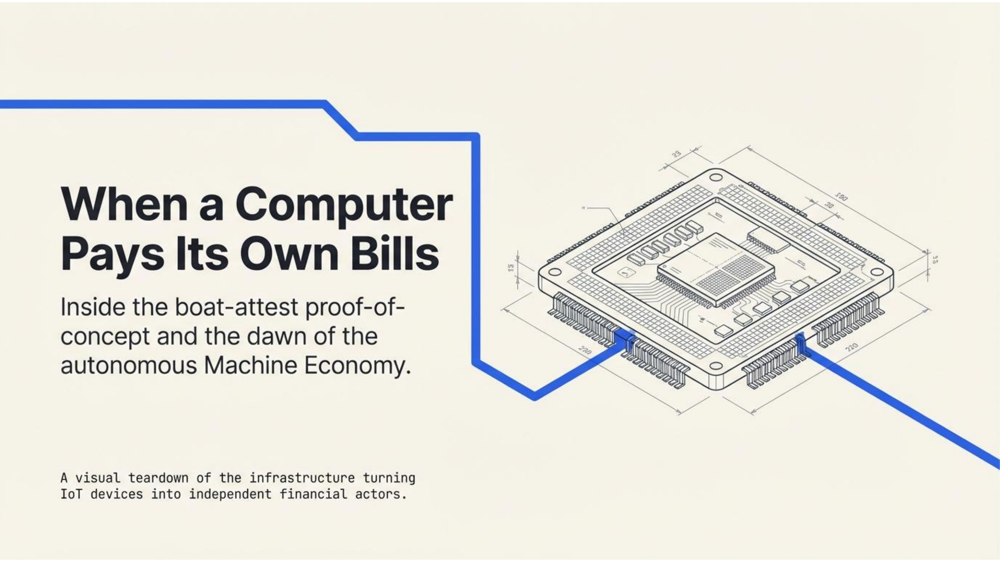
There's a small computer sitting on my desk. It's about the size of two credit cards, powered by a RISC-V chip, and it costs less than a nice dinner. It doesn't look like much. But every hour, it wakes up, checks its own vital signs, cryptographically signs a report, pays a few fractions of a cent to have that report notarized on a blockchain, and goes back to sleep.
No human touches it. No human approves the payment. The machine hasn't a bank account, and yet it transacts autonomously in a global financial network.
This is boat-attest. And it might be the most boring demo that changes how you think about the future of money.
The Setup
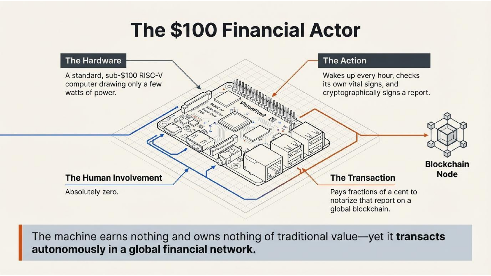
BoAT — Blockchain of AI Things — is a project by TLAY.io to give machines their own blockchain wallets. Not custodial accounts managed by humans. Real wallets, with real keys, making real payments. boat-attest is a demo of this idea, running on a VisionFive2 development board from StarFive.
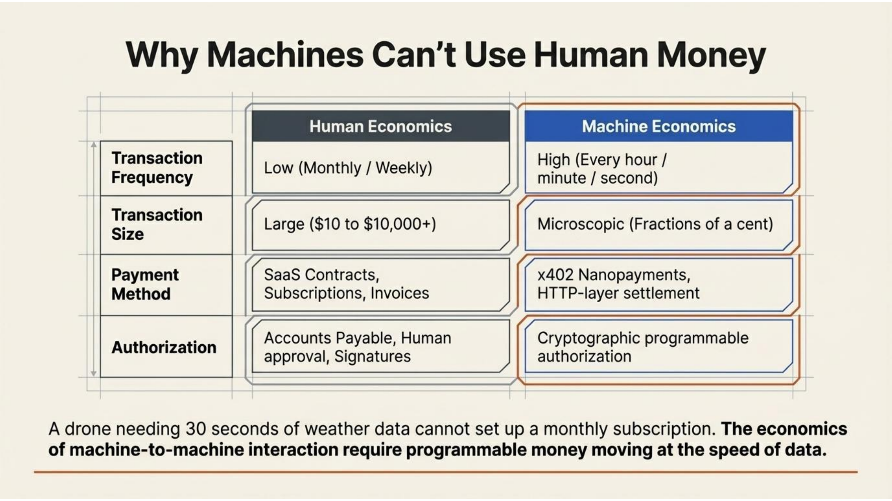
The VisionFive2 is a quad-core RISC-V single-board computer. We chose it deliberately. RISC-V is an open instruction set architecture for Open Silicon — no licensing fees, no proprietary lock-in. It represents the kind of hardware that will power billions of edge devices in the coming decade: sensors, robots, autonomous vehicles, industrial controllers. If the machine economy has a native CPU architecture, RISC-V is a strong candidate.
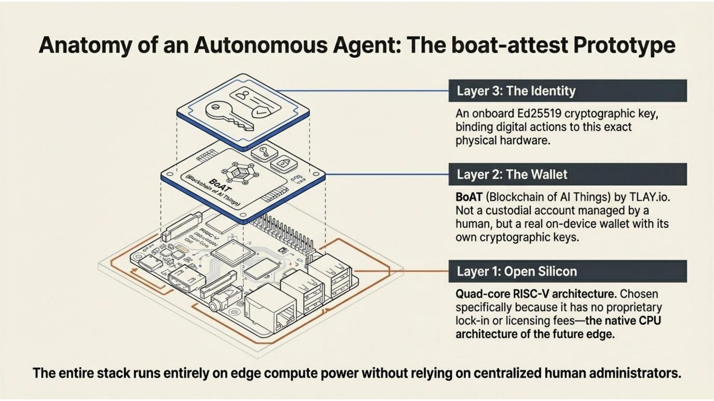
On this board, boat-attest does something simple but meaningful. It reads the system's memory usage, CPU load, and a timestamp. It hashes that data, signs it with the device's own Ed25519 key, and submits it to HashAnchor — a platform that anchors data attestations into Merkle trees and stores the proofs on-chain. The result is a tamper-proof, independently verifiable record that this specific board, at this specific moment, reported these specific metrics.
And it pays for the service itself.
Machines That Pay for What They Use
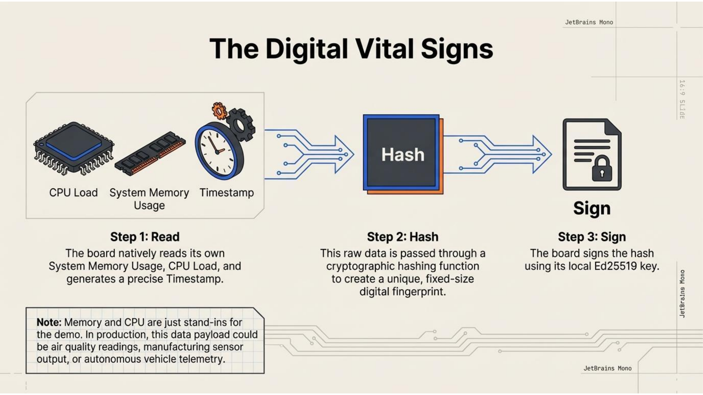
The payment layer is where things get interesting. boat-attest uses the x402 protocol with Circle's Gateway Nanopayments to pay for each attestation in USDC — programmatic money moving at the HTTP layer.
Here's how it works in plain terms:
When the board submits its attestation, the server responds with a price. The board's wallet signs a payment authorization — a cryptographic promise that the funds can be transferred — and resubmits. The server verifies the payment, settles it, and accepts the attestation. The whole exchange happens in two HTTP round-trips. No invoices. No billing cycles. No accounts payable department.
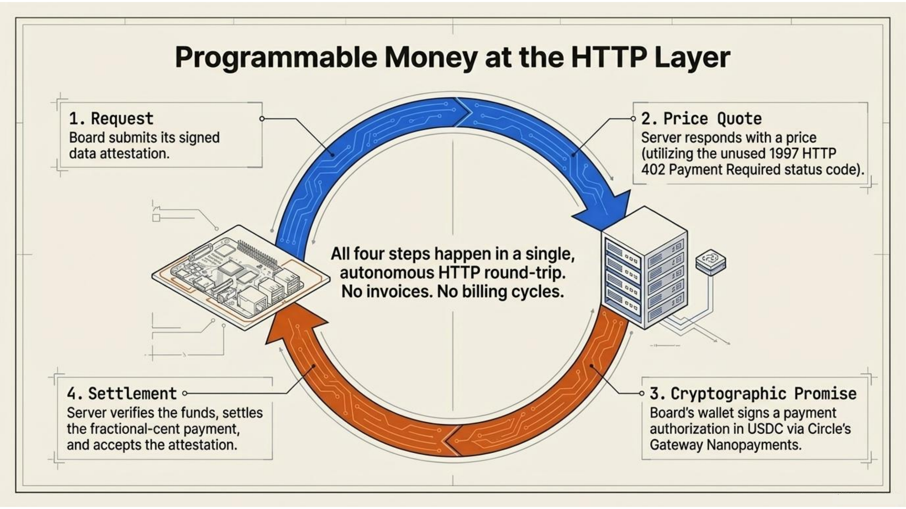
This is pay-per-use at its most literal. The machine consumes a service, the machine pays for the service, and the cost is measured in fractions of a cent. The x402 protocol — named after the HTTP 402 "Payment Required" status code that has sat unused in the spec since 1997 — finally gives that status code a job.
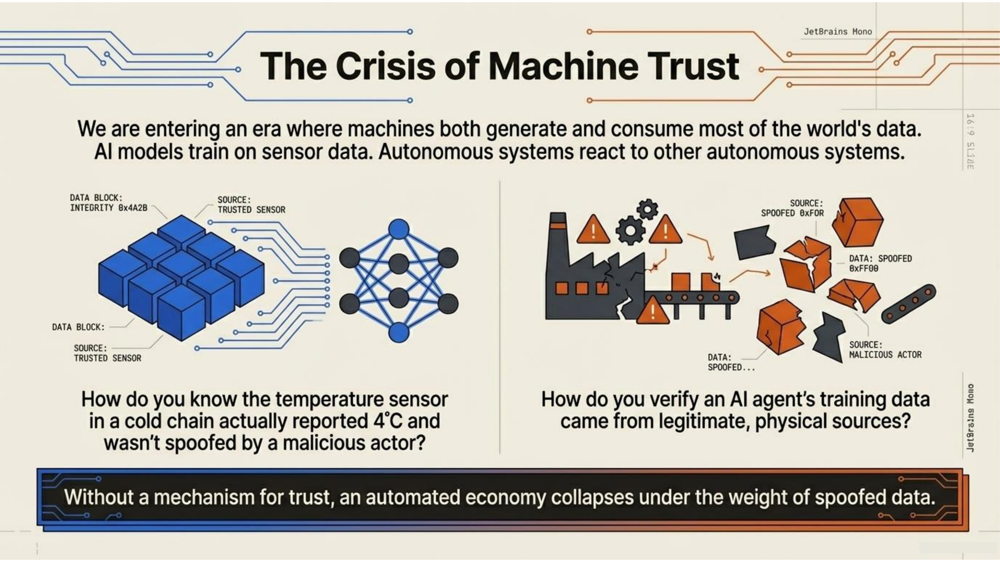
Why does this matter? Because the economics of machine-to-machine interaction don't fit human payment models. A sensor that reports data once per hour can't sign a SaaS contract. A drone that needs weather data for 30 seconds can't set up a monthly subscription. An AI agent that queries three different APIs to answer one question can't manage three vendor relationships. These interactions are too small, too frequent, and too autonomous for the payment infrastructure we've built for humans.
Nanopayments change the equation. When the cost of a transaction approaches zero and the authorization is programmable, machines can participate in markets directly.
Why Attestation Matters
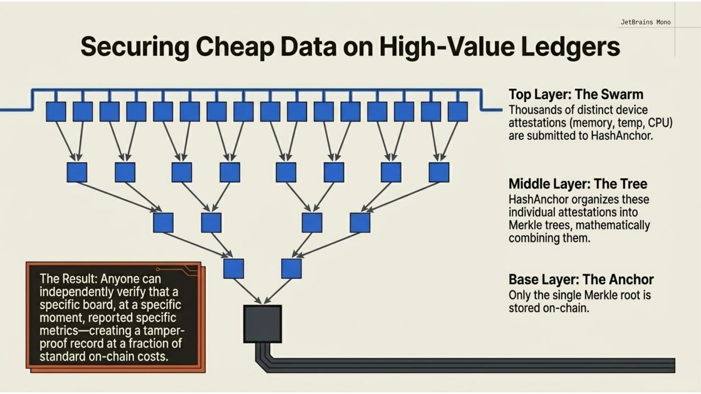
You might wonder: why would anyone care about a small board's memory usage?
The memory and CPU data is a stand-in. What matters is the pattern: a device generating data, signing it with a hardware-bound identity, and anchoring it to an immutable record. Replace "memory usage" with "air quality reading" or "manufacturing sensor output" or "autonomous vehicle telemetry" and the implications become clearer.
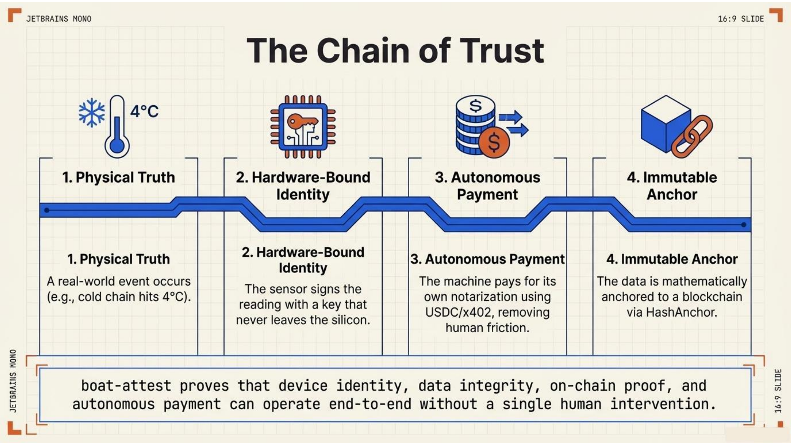
We are entering an era where machines generate most of the world's data, and increasingly, machines consume most of it too. AI models train on sensor data. Autonomous systems make decisions based on readings from other autonomous systems. Supply chains depend on IoT devices reporting conditions in real time.
But how do you trust data from a machine? How do you know the temperature sensor in a cold chain actually reported 4°C and wasn't spoofed? How do you verify that an AI agent's training data came from legitimate sources?
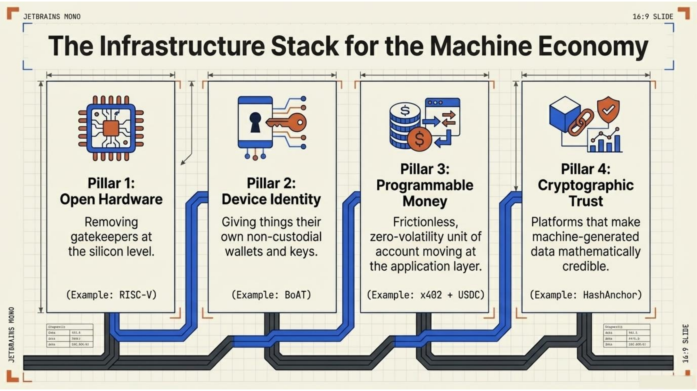
Attestation is the answer. When a device signs its data with a key that never leaves the hardware, and that signature is anchored to a blockchain, you get a chain of trust that runs from the physical world to an immutable ledger. HashAnchor provides this infrastructure — accepting attestations from devices and agents, organizing them into Merkle trees, and storing the roots on-chain where anyone can verify them.
boat-attest demonstrates this end-to-end: device identity, data integrity, on-chain proof, and autonomous payment — all without human intervention.
The Bigger Picture: Infrastructure for the Machine Economy
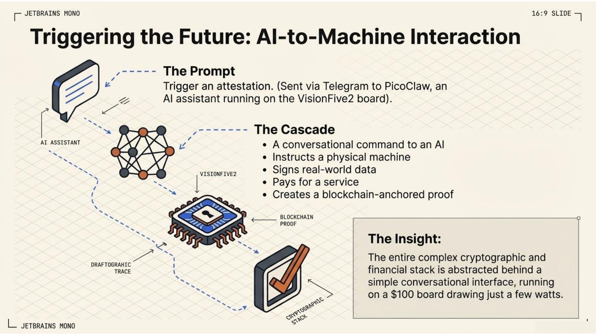
There's a narrative in crypto that has been searching for its killer app for years: the machine economy. The idea that as AI agents and IoT devices proliferate, they'll need to transact with each other — paying for data, compute, bandwidth, storage, and services in real time.
The pieces are finally coming together. Stablecoins like USDC provide a unit of account that machines can use without exposure to volatility. Payment protocols like x402 embed financial transactions into the application layer. Open hardware like RISC-V removes gatekeepers from the silicon level. And attestation platforms like HashAnchor provide the trust layer that makes machine-generated data credible.
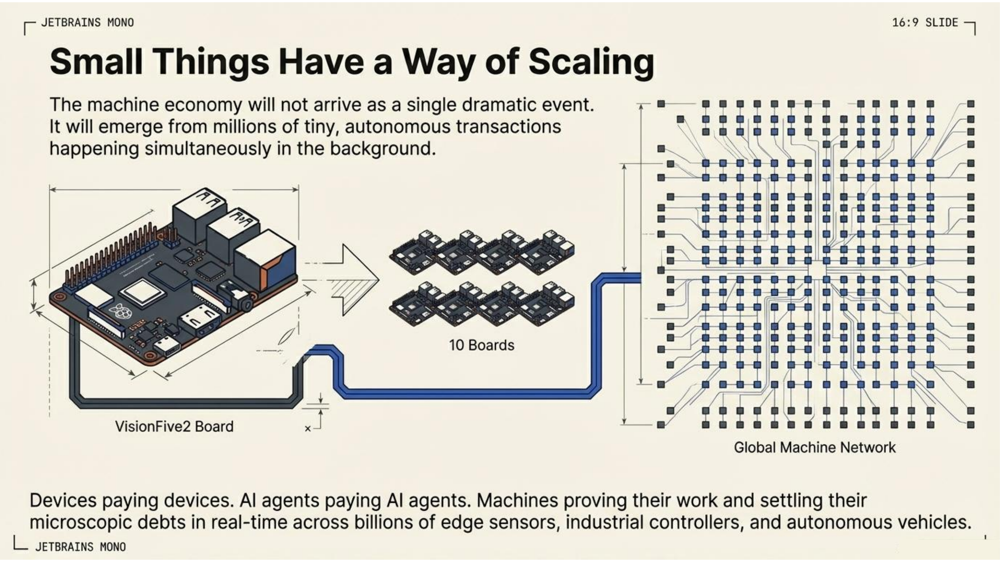
BoAT sits at the intersection of these trends. It's a blockchain wallet designed not for people, but for things. A VisionFive2 board running boat-attest isn't just a demo — it's a prototype of every device that will eventually need to prove what it measured, pay for what it consumed, and be accountable for what it reported.
From Demo to Vision
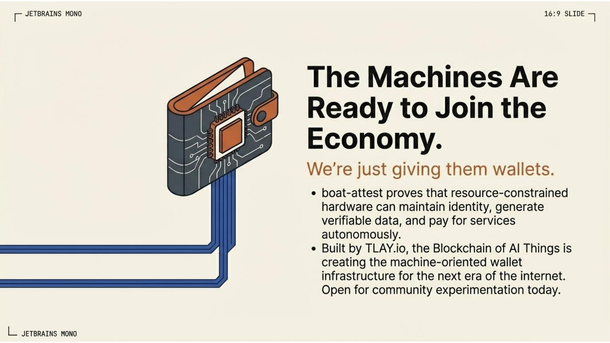
Today, I can open Telegram, message PicoClaw — an AI assistant running on the same VisionFive2 board — and ask it to trigger an attestation. A conversational command to an AI, which instructs a machine, which signs data, pays for a service, and creates a blockchain-anchored proof. The entire stack runs on a $100 board drawing a few watts of power.
It's a small thing. But small things have a way of scaling.
The machine economy won't arrive as a single dramatic event. It will emerge from millions of tiny, autonomous transactions — devices paying devices, agents paying agents, machines proving their work and settling their debts in real time. The infrastructure for this economy needs to be lightweight enough to run on constrained hardware, open enough to avoid vendor lock-in, and trustworthy enough to operate without human oversight.
That's what we're building with BoAT. boat-attest is the first step: proof that a resource-constrained RISC-V board can maintain its own cryptographic identity, generate verifiable data, and pay for blockchain services autonomously.
The machines are ready to join the economy. We're just giving them wallets.
About BoAT
TLAY.io is building BoAT (Blockchain of AI Things), machine-oriented blockchain wallet infrastructure for the autonomous economy. boat-attest runs on the StarFive VisionFive2 and is open for community experimentation.